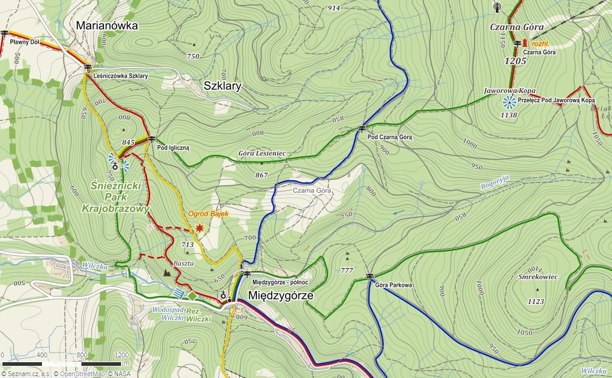

Międzygórze
Międzygórze to jedna z najpiękniej położonych miejscowości w polskich górach, malowniczo przycupnięta u stóp Masywu Śnieżnika - najwyższej kulminacji polskich Sudetów Wschodnich. Turyści planujący trasy krajoznawcze i wypoczynek w Kotlinie Kłodzkiej najczęściej zatrzymują się na dłuższy pobyt właśnie w Międzygórzu, nazywanym przez wielu "perłą Sudetów". Międzygórze oferuje idealne warunki do niezapomnianych, całodniowych wycieczek w góry. To wprost doskonała baza wypadowa na Śnieżnik, Czarną Górę, Smrekowiec, Trójmorski Wierch i wiele innych wartych odwiedzenia miejsc, których ogromnym atutem jest zapierający dech w piersiach widok na całą Kotlinę Kłodzką.
Szlaki z międzygórza
- Szlak niebieski na Przełęcz Puchaczówka | 2h
- Szlak niebieski na Przełęcz Śnieżnicką | 2h 35min
- Szlak czerwony na Śnieżnik | 2h 20min
- Szlak zielony na Przełęcz Śnieżnicką | 2
- Szlak zielony na Czarną Górę | 1h 40min
- Szlak zielony na Marię Śnieżną | 1h 10min
- Szlak czerwony do Ogrodu Bajek i na Marię Śnieżną | 1h
- Szlak żółty do Ogrodu Bajek i na Marię Śnieżną | 1h
- Szlak żółty na Przełęcz Puchacza | 2h 45min